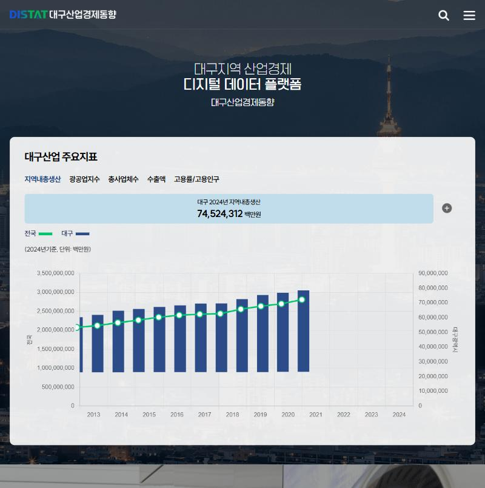
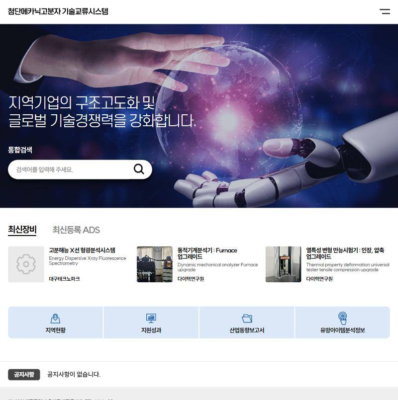
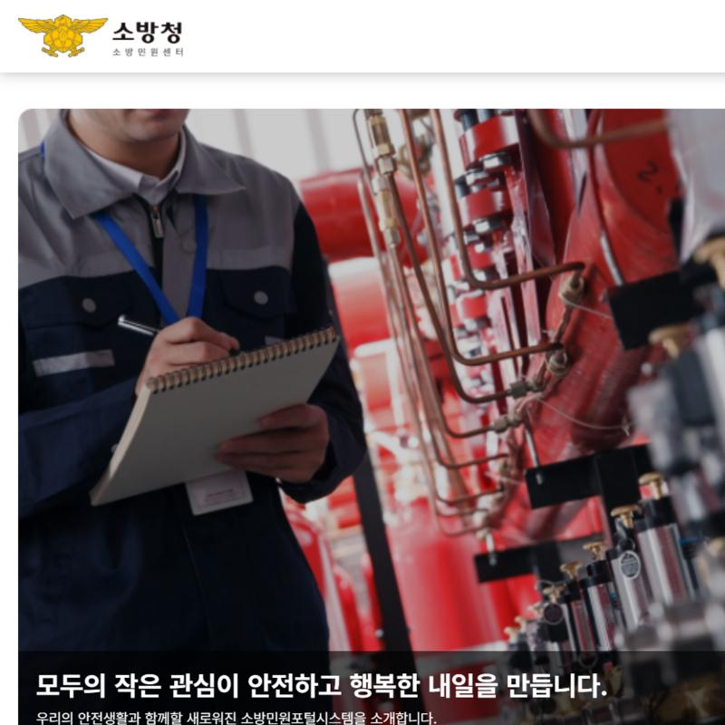

웹 개발자 안지원의 포트폴리오
안녕하세요! 책임감 있는 웹 개발자 안지원입니다. 공공·민간 웹 시스템을 화면 구현부터 데이터베이스 설계, 배포까지 폭넓게 경험했고, 맡은 프로젝트는 끝까지 책임지고 완수합니다.
공공·민간 웹 시스템 개발·운영 경력
대구산업경제동향 온라인시스템 유지보수·기능 개선
소방예방정보시스템 신규 민원 추가 개발·DB 설계
㈜루트랩 경력기술서 기준 수행 프로젝트
핵심 역량 및 요약
풀스택 개발
Java와 Spring 기반으로 화면 구현부터 DB 설계, 배포까지 시스템 전반을 경험했습니다.
공공 데이터 연계
통계청·한국은행 API 연계 데이터 모니터링 페이지를 개발하고 약 3년째 유지보수·개선하고 있습니다.
검색엔진 구축
첨단메카닉고분자 기술교류시스템에서 Elasticsearch 기반 장비 검색엔진을 구축했습니다.
폐쇄망 · 배포 자동화
소방예방정보시스템 고도화에서 신규 민원 30종의 DB 설계와 원클릭 배포 자동화를 구현했습니다.
지도 API · 권한 제어
재난현장 영상정보 공유시스템에서 지도 API 교체와 사용자 권한별 접근 제어를 기한 내에 마무리했습니다.
AI 코딩 도구 활용
내부 자산관리 시스템을 기획부터 맡아 AI 코딩 도구를 활용해 개발했습니다.
주요 프로젝트
비공개 시스템은 링크 대신 설명으로 대신했습니다. "상세 보기"에서 담당 업무와 적용 기술을 볼 수 있습니다.

대구산업경제동향 온라인시스템
대구지역 산업경제 디지털 데이터 플랫폼입니다. 2023년 시스템 개편부터 약 3년째 기능 개선과 유지보수를 담당하고 있습니다.
- 통계청·한국은행 API 연계 데이터 모니터링 페이지 개발
- 시스템 개편·기능 보강부터 프로젝트 관리까지 지속 담당
- Spring Framework
- Open API 연동

ETRI 첨단메카닉고분자 기술교류시스템
지역 연구장비와 기술 정보를 연결하는 기술교류 플랫폼입니다. 연구장비 정보를 API로 연동하고 검색엔진을 구축했습니다.
- 장비목록 API 연동과 스케줄러 기반 데이터 현행화
- Elasticsearch 장비 검색엔진: 색인, 자동완성, 검색 순위 로직, ELK 구성
- API 연동
- 스케줄러
- Elasticsearch
- ELK Stack

소방예방정보시스템 기능 고도화
소방예방정보시스템 온라인민원포털(소방민원센터)의 기능 고도화 사업입니다. 외부 접속이 제한된 폐쇄망 환경에서 개발했습니다.
- 신규 민원 30종 추가 개발과 DB 설계
- 폐쇄망에서도 원클릭 배포가 가능한 배포 자동화 스크립트 구현
- Spring Boot
- PostgreSQL
- 배포 자동화
- 폐쇄망
재난현장 영상정보 공유시스템
재난현장 영상정보 공유와 담당자 승인 기능을 제공하는 시스템입니다. 2022년 시범구축에 참여한 뒤 2024~2025년 고도화를 맡았습니다.
- 지도 API 변경 대응 및 시스템 고도화·유지보수
- 사용자 권한별 데이터 접근 제어 구현
- KakaoMap API
- Vworld API
- 권한 제어
내부 자산관리 시스템
사내 자산관리를 위한 내부 시스템입니다. 프로젝트 기획과 화면·기능 설계부터 맡아 개발까지 진행했습니다.
- 프로젝트 기획 및 화면·기능 설계
- AI 코딩 도구를 활용한 Spring Boot·React 개발
- Spring Boot
- React
- AI 코딩 도구
기술 스택
프로젝트에서 사용해 온 기술들입니다.
Backend
- Java
- Spring Framework
- Spring Boot
- eGovFrame
- MyBatis
- Spring Data JPA
- REST API
- PHP
Frontend
- JavaScript
- jQuery
- React
- JSP
- Thymeleaf
- WebSquare
Database
- PostgreSQL
- MySQL
- MariaDB
- Oracle
- Tibero
Search · Infra
- Elasticsearch (ELK)
- Linux (CentOS)
- Docker
- NGINX
- Apache Tomcat
- JBoss
- Jenkins
- Gradle
API · 연동
- KakaoMap API
- Vworld API
- 통계청·한국은행 API
- SSO · LMS 연동
- 블록체인 연동
Collaboration
- Git
- GitLab
- SVN
프로필 및 경력
소개
갑작스러운 인원 감축이나 요구사항 변경 속에서도 맡은 과업을 끝까지 수행하고, 협업 방식을 개선하며 시스템을 완수해왔습니다. 낯선 기술이나 제한된 개발 환경에서도 원리를 분석해 빠르게 적응합니다.
경력
- 2022.12 ~ 현재 ㈜루트랩 플랫폼개발팀 선임연구원 · 웹 개발
- 2021.11 ~ 2022.12 ㈜이튜 웹 개발 및 유지보수
교육
대구가톨릭대학교 컴퓨터공학 졸업2018.03 ~ 2022.02
한국전파진흥협회 지능형 웹 알고리즘을 활용한 풀스택 개발자 양성과정2021.03 ~ 2021.08
자격증
컴퓨터활용능력 2급2019.11
ISTQB Certified Tester2018.12